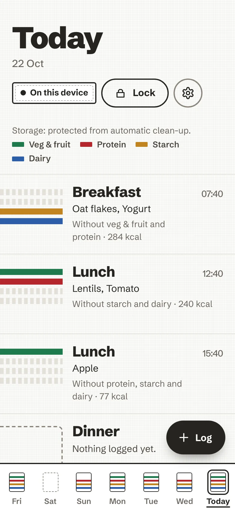
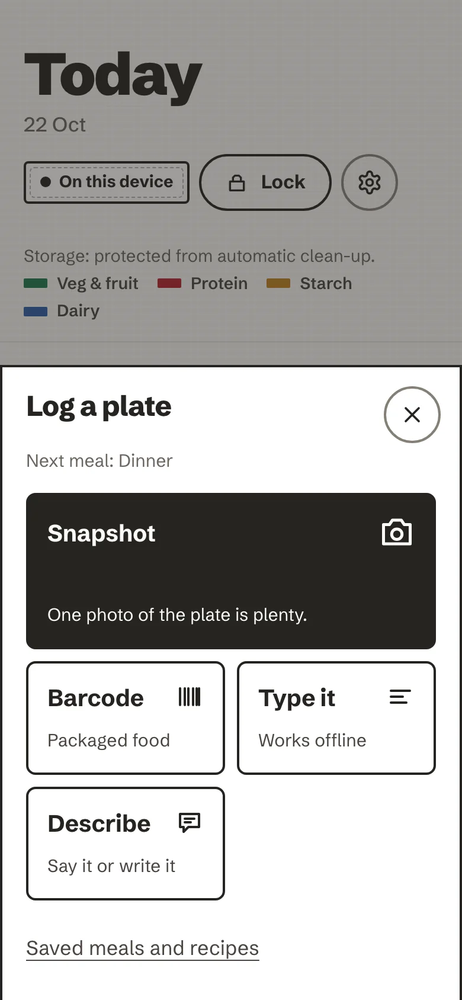
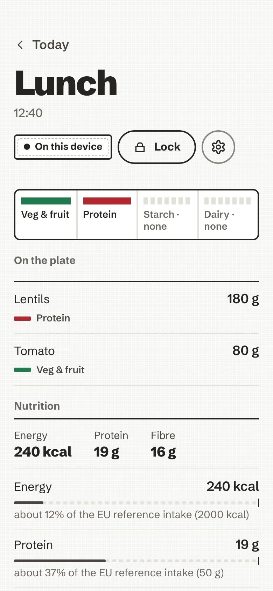

Lunch
Lentils 180 g · Tomato 80 g
Veg & fruit and protein on the plate. No starch, no dairy.
Log a meal by photo, barcode, a few words or your voice. It lands on your day as an honest plate: food groups, grams, nutrients. No account, no scores, and nothing leaves your device unless you say so.

Oat flakes, yogurt · 284 kcal
Lentils, tomato · 240 kcal
Apple · 77 kcal
Bare cotton until you log it
At the table, in a shop aisle, or from memory after the fact. One thumb, one plate. If the AI is off, offline or unsure, the meal still lands.
One photo of the plate is plenty. Its metadata is stripped, and it goes to the AI only after you agree, every time by default.
A plate of lentils and tomatoLands as veg & fruit and protein
Scan a pack and Open Food Facts returns the label’s own numbers, per gram. Unknown product? You can add it.
Crunchy oat muesli, per gramLands as starch
Ranked matches as you type, with portion presets in plain sizes and grams when you know them.
Plain yogurt, 125 gLands as dairy
Say it or write it: “a bowl of lentil salad and an apple”. Your words become foods and grams you can check.
“Lentil salad and some bread”Lands as veg & fruit, protein and starch
Drop in the ingredient list, say how many servings you ate, and the plate is worked out from it.
One serving of a lasagneLands as veg & fruit, protein, starch and dairy

And the everyday shortcuts. Recent foods, saved meals, and copying yesterday’s breakfast or a whole day.
Four food groups, present or absent, woven into the day. Tap the plate and the grams and nutrients are there, set against the EU reference intakes or your own daily guide. Estimates wear a “~”. Nothing turns red.
Lentils 180 g · Tomato 80 g
Veg & fruit and protein on the plate. No starch, no dairy.

After a plate, the coach may ask one thing, with a specific number to hand. Answer, ask it something back, or let it go. Dismissing costs nothing, and it never nags you to come back.
The week is read the same way as the day: which groups showed up, and which didn’t. Then the daily averages, plainly.
Veg and fruit showed up on six days this week, dairy on four. A sentence, not a score · demo week
There is no account and no server holding your meals. Your history is an encrypted database in your browser, opened by your passphrase. Here is everything that can leave the device, and when.
GET /api/v2/product/<barcode>?fields=…Only when you scan a barcode. To Open Food Facts, no cookie, no referrer.
POST <your AI endpoint>Only if you turned an AI on, and only after you agree. A fixed set of fields; photos have their metadata stripped.
GET /sw.js, /precache-manifest.jsonThe app updating itself from your own server. It waits for you to tap Reload.
telemetry, analytics, crash reportsNone. A build gate fails if one is ever imported.
The browser enforces this too: the content security policy blocks every other origin.
Your passphrase is the key. The store is SQLite encrypted with ChaCha20-Poly1305, its key derived from your passphrase on the device. A wrong passphrase cannot open it, locking drops the key, and erasing removes every byte.
Backups stay sealed. The backup file is sealed with AES-256-GCM under a backup passphrase (Argon2id). Restoring needs nothing but the file and you, on any instance, offline.
Every promise has a test. The README’s trust table names the test that proves each line, and the release fails without it.
Typing, barcodes, recents, saved meals and recipes all work with no AI at all. When you want photo recognition, descriptions or a conversation with the coach, pick where it runs.
Everything that doesn’t need a model. Nothing is sent anywhere.
DefaultWhoever runs your instance can connect a model once for the household. You still agree per photo.
OptionalBring a key for any OpenAI-compatible endpoint. It lives in the encrypted store, bound to its host.
OptionalRunning a model on the device itself.
PlannedThe server is a hardened static container: read-only, non-root, no database, no outbound need. It holds none of your data. Put it on a home server or a small VPS, then open it on every phone in the house.
Start it. One command builds and serves it. Add --tls for automatic HTTPS, or --traefik behind your own proxy.
Open it on your phone. Over HTTPS, then Add to Home Screen or Install app. It works offline from then on.
Choose a passphrase. It opens your encrypted store on this device. Each person, each device, their own.
# build and serve on http://localhost:8080
$ bin/ai-nutrition-coach up
# automatic HTTPS for your domain (Caddy)
$ export AI_NUTRITION_COACH_DOMAIN=plate.example.com
$ bin/ai-nutrition-coach up --tls
# or the published image
$ docker pull \
ghcr.io/mmornati/ai-nutrition-coachInstalls as an appA PWA with its own service worker; no app store.
Offline firstLog in a cellar or on a plane; nothing waits on a network.
English and FrenchFollows your device, or choose in Settings.
Accessible48px targets, screen-reader parity, reduced motion respected.
Drawn frame by frame in your browser, narrated, with subtitles. Shorter how-to episodes live in the docs.